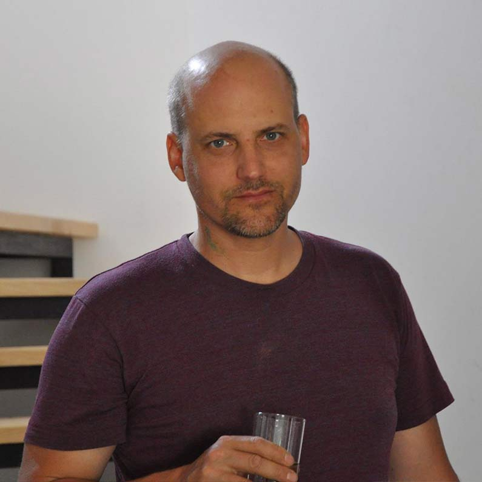
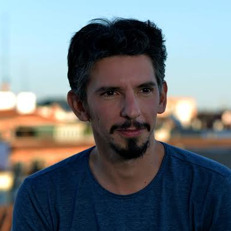

Isabella Pers
Isabella Pers lives and works in Friuli.
Co-founding member and co-director of RAVE East Village Artist Residency, an artistic project that deals with the role of contemporary art in relation to the need to rethink ourselves and our world through biocentrism and non-specist thinking.
Her works have been exhibited in international events and institutions and she partecipated at talks and dialogues in various institution
Davide Bevilacqua
Davide Bevilacqua is an artist and curator active in the fields of art, media, and technology.
He studied theater and performance art at IUAV University in Venice, Italy, later focused on new media art at Interface Cultures, Kunstuniversität Linz, Austria.
Davide is interested in topics such as the relationship between new media and contemporary art, the evolution of contemporary technological positivism, and the rampant rhetoric of cybernetics, robots, and artificial intelligence.
Lara Trevisan
Lara Trevisan is developing site-specific interventions of street-art, applying to urban walls and pavements large format photographs which interact with the environment that hosts them and with the gaze of the observer: for example open windows which offer to the eye new spaces where one can imagine to run freely (Fontainebleau, 2010), pools in which to dive and resurface from (Piscina, 2013), future scenarios where a humanised Nature reclaims the landscape (Quarto Scenario, 2015).
The spectator becomes the protagonist: he can identify himself with the images and can physically interact with them by treading, entering or sitting on them.
Michele Tajariol
His early research led him to confront the language of sculpture through the use of objects that decontextualize spaces or affective places. An idea of sculpture of composition with different materials and common objects.
The identity of sculpture-object has shifted the language of the artist for a performative and photographic purpose, in which he compares body and work for a single objectivity of visual synthesis. The use of different languages erases the expressive self-referentiality and opens the work towards collaborations with other artists

Rok Bogataj
Rok Bogataj was born in Ljubljana (Slovenia).
He graduated in 2002 at the Academy of fine Arts in Venice. His work is expressed through different mediums such as sculpture, photography, video, sound and drawing. He composes archaeology of daily life using the materials that surround us in particularly plastic, wood and metal. He gives to these elements a new aesthetic present with the process of melts, moulds and reproduction.
Veronika Krenn
Veronika Krenn studied Interface Cultures at the University of Art and Design in Linz, Austria.
She is a designer and artist in the field of new media, interactive art and Eat Art, focussing on the manipulation of already known and everyday objects with a strong interest in the transmission of information through multi-sensory experiences. In her works she investigates traditional handcrafts and food as a medium to create unconventional communication strategies, using daily habits as a carrier for social-relevant messages.
Andrea Capaldi
Andrea Capaldi is CEO of mare culturale urbano, founded in 2014 with Paolo Aniello and Benedetto Sicca.
Mare is a center of artistic production, which has been recognized as a “innovative start-up with social vocation”, born in the west of Milan to build a new model of territorial development for the suburbs. Starting from a strong link with the local dimension, it develops international exchanges and activates processes of social inclusion, urban regeneration and cultural innovation.
His artistic career began on the stage. He graduated as an actor at the Silvio D'Amico National Academy of Dramatic Arts in Rome and over the years he has taken part in numerous theatrical productions.
Thanks to the significant experience in live shows, he concretely experimented with various forms of residency and with innovative modalities of artistic creation.
Brice Coniglio
Brice Coniglio is a visual artist and film director in the ConiglioViola duo (www.coniglioviola.com).
Since 2009 he has managed the Kaninchen-Haus organization (www.kaninchenhaus.org) which produces innovative projects and actions in the fields of contemporary art and culture.
In 2017 he started the VIADELLAFUCINA16 project, the first international experiment of a condominium-museum (www.condominiomuseo.it).
David Calas
David Calas, architect and lecturer at the TU Vienna – Faculty of Architecture, Austria, operates between the blurring boundaries of urban planning, architecture, art and politics. Focus of his work at Studio Calas is the relation of design practice and socio-cultural development. The modus operandi concentrates on accessible and clearly communicated design approaches and the implementation of digital inquiry strategies.
Elena Marchigiani
Elena Marchigiani is currently professor at the University of Trieste, at the Master Course of Architecture where she coordinates the Atelier of Urban Planning and she is member of the board of directors of the Advanced Master in Sustainable Blue Growth (University of Trieste, OGS). She is part of the scientific committee of the inter-university ph.D course in Engineering and Architecture of the Universities of Trieste and Udine.
Her core research interests refer to: tools and processes for the design, planning and management of urban territories and landscapes, with a specific focus on urban resilience; urban regeneration (in the frame of environmental, cultural and social sustainability issues), with particular reference to council housing districts; the construction of interactive and participatory processes; the innovation in public action and public policies.
Elena Tammaro
I am a CCI’s entrepreneur since 2013.
Since 2006 I work with contemporary artists. I founded my own cultural association in 2006. I produced venues, festivals and exhibitions. I worked with international artists, for residencies programs and festivals. Since 2011 I and my business partner Federica Manaigo, developed a research based on finding best practices linking arts and business. Since 2013 we are CREAA, a CCI that is developing formats that use arts a driving force to innovation. We work with regional institutions, private companies and education. From 2013, I and my business partner, developed formats to involve artists and communities. Since 2015 I’m Board Member of Foundation Teatro Nuovo Giovanni da Udine. Trainer in the areas of expertise: designing, curating cultural events and organizing secretarial services.
Francesco Previti
Architect he is collaborating with associations that deal and care about Commons organic production and environmental sustainability issues in general with special affection and participation in a collective farming project in Verona. In Spain and Italy he’s collaborating in different projects experimenting and prototyping urban regeneration through collective codesign and colearning projects. Temporary reuse of abandoned building and self management of independent civic spaces. He starts his collaboration and participation in CivicWise since the first phases of the selfstructuring process of the community.
Ileana Toscano
Ileana Toscano is an urban planner and president of Kallipolis, with a sound experience in developing innovative urban projects, starting from the drafting to the implementation of a project life cycle, throughout a social inclusive approach and promoting the involvement of relevant stakeholders and local communities, aiming at supporting the process of policy-making for an urban sustainable development.
In her 13 years in the profession she has had the opportunity to work on several international and national projects both in Europe, in the Global South and Countries in transition, aimed at supporting Local Authorities in promoting innovative participative urban instruments for a sustainable urban development and for combatting urban poverty.
Since 2016 she has been an URBACT validated expert for the thematic expertise of Integrated Urban Renewal, Local Governance and Social Inclusion.
Irene Poggi
After some experiences in Italy related to project implementation in the field of social integration, citizen participation and urban regeneration, Irene has arrived at Changemaker/Bar Social (Göteborg, Sweden www.changemaker.nu) with the aim of exploring different subjects. Now she has a role of “project writer addicted” for finding new opportunities at european level within cooperation projects. She holds a MA in Social Science and Public Policy with a focus on interculturality.

Juan Lopez Aranguren Blazquez
I am a founding member of the non-profit organization www.basurama.orgwith which I worked for more than 16 years activating communities all over the planet.
I am currently coordinating the Imagina Madrid program for the city council of Madrid, focused on recovering abandoned spaces through art and culture as tools to activate the communities that inhabit them.
Nadia Vedova
Construction engineer and member of the directive board of Kallipolis. I design and manage national and international cooperation projects on urban development, culture and social innovation.I work with my colleagues to realize our "utopia": building cities inclusive, green, attractive and resilient for all. In our projects we are dealing with suburbs, requalification of public spaces, integration, local governance and active involvement of the community and the most vulnerable groups through their engagement in the urban change.I believe in Culture as a driver for a sustainable and long-term social and economic development.
Silvia Bean
Architect and PhD Student at University of Udine + University of Trieste. She investigates on urban/human phenomena in order to build spaces and communities. Deals with urban projects that involve both academics and professionals as well as citizens for mutual enrichment.
Silvia Porretta
Silvia Porretta has worked since 2012 at the Urban Marketing Office of the Municipality of Bologna, supporting the cultural and creative enterprises of the region with the project INCREDIBOL! - the CREative INnovation of BOLogna. After the almost ten years of experience gained in the Bologna Film Library (2003-2012) and, thanks to her previous training, she has indeed developed technical and strategic skills in the field of the promotion and marketing as well as in the management and development of projects. In the last years she has been working on the implementation of cross-sector actions, international projects and the study of territorial policies in this sector.
Silvia Tagliazucchi
Silvia Tagliazucchi | Architect, civic designer, project and community manager
PhD at the University of Bologna in Urban Morphology. She is an architect with a strong focus on the study of the relationship between people and architecture, and how the physical and qualitative dimension of spaces influence human well-being. She carries out such researches both on the academic side – lecturer and visiting professor at the University of Ferrara - and through practical applications in participatory projects both in Italy and Europe. From 2017 she has been working in the association Amigdala as community and project manager for the Civic Factory OvestLab.
Vid Tratnik
Vid Tratnik is President of PiNA, Association for culture and education, who led PiNA through complete reform in 2008 till today. PiNA is as well an NGO aiming for social development by promoting respect for basic human rights, active participation of individuals and their cultural engagement; by promoting the environment protection and encouraging sustainable development; through critical thought and ethical action; and finally, though life-long learning and holistic approach in education.
Saul Daru'
Illustrator and architect. Engaged in cultural and editorial projects, illustrations, motion graphics and video scenography for theatre, he is also involved in international cooperation projects. Saul has been working and developing his creativeness in international projects and multicultural environments. After his M.Arch at IUAV (Venice) and FAUP (Oporto) he worked as an architect and illustrator (visual facilitator and children's books) in Portugal, Spain and China for many years. After a Post Graduate Diploma in Ephemeral Architecture at UPC (Barcelona) and a Master in Stop Motion Animation at Escola de Cinema 9Zeros (Barcelona) he started working on his own on multidisciplinary projects in the field of art / theatre / architecture, mixing together the different competencies he had learnt. Now based in Trieste, Saul works as a freelance architect and illustrator with Public Authorities, Not For Profit Organizations and NGOs on participatory processes, cultural planning and mapping using drawing as the main tool to communicate concepts.
Marilù Manta
Marilù Manta is born in Andria and she is graduated in Business Economy, then specialized in Art and Management. Marilù has been living in Milan for 4 years where she worked for a big and innovative museum institution. Now she works for cheFare as Project Manager of public art project Civic Media Art.